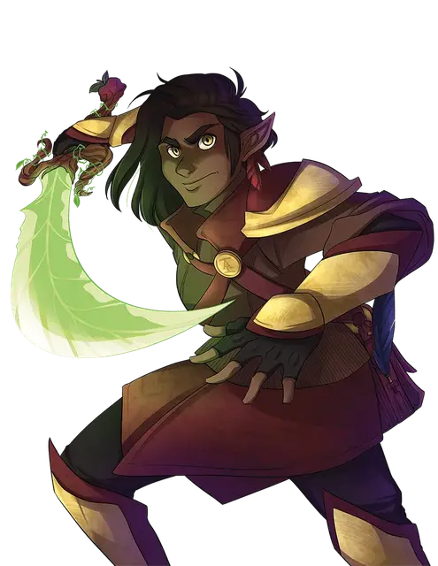

Грецкорех Мокротрав
Walnut Dankgrass
Средний Гуманоид (Эльфийка), законно-нейтральный, именной НИП

Класс Доспеха 14 (кожаный доспех)
Хиты 52 (8к8 + 16)
Скорость 35 футов
| мод | спас | ||
|---|---|---|---|
| СИЛ | 8 | −1 | −1 |
| ЛОВ | 16 | +3 | +3 |
| ТЕЛ | 14 | +2 | +2 |
| мод | спас | ||
|---|---|---|---|
| ИНТ | 10 | +0 | +2 |
| МДР | 18 | +4 | +6 |
| ХАР | 10 | +0 | +0 |
Навыки Атлетика +1, Восприятие +6, Выживание +6, Проницательность +6, Скрытность +5
Чувства тёмное зрение 60 футов, пассивное Восприятие 16
Языки Общий, Друидический, Сильван, Эльфийский
Опасность 3 (700 опыта)
Бонус мастерства +2
Особенности
Наследие фей. Грецкорех совершает с преимуществом спасброски от очарования, и магия не может её усыпить.
Маскировка в дикой местности. Грецкорех могут пытаться спрятаться, даже когда он лишь слегка скрыт листвой, сильным дождем, падающим снегом, туманом и другими природными явлениями.
Использование заклинаний. Грецкорех является заклинательницей 7-го уровня. Базовой характеристикой Грецкореха является Мудрость (Сл спасброска от заклинания 14). У неё подготовлены следующие заклинания друида:
• Заговоры (неограниченно): искусство друидов [druidcraft], сотворение пламени [produce flame], терновый кнут [thorn whip];
• 1 уровень (4 ячейки): лечение ран [cure wounds], опутывание [entangle], волна грома [thunderwave];
• 2 уровень (3 ячейки): горящий клинок [flame blade], лунный луч [moonbeam], бесследное передвижение [pass without trace];
• 3 уровень (3 ячейки): призыв молнии [call lightning], рассеивание магии [dispel magic], рост растений [plant growth];
• 4 уровень (1 ячейка): усыхание [blight], свобода перемещения [freedom of movement].
Дикая форма (Перезаряжается после короткого или продолжительного отдыха). Бонусным действием Грецкорех может принять облик лютого волка [dire wolf]. Она может оставаться в этой форме в течение 3 часов или до тех пор, пока не вернется к своей обычной форме бонусным действием. Она автоматически возвращается, если теряет сознание, её хиты уменьшаются до 0 или умирает.
Во время трансформации игровые параметры Грецкорех заменяются параметрами лютого волка, за исключением того, что она сохраняет своё мировоззрение, личность и значения Интеллекта, Мудрости и Харизмы.
Её атаки в звериной форме считаются магическими. Находясь в форме зверя, Грецкорех может использовать бонусное действие, чтобы израсходовать одну ячейку заклинаний и восстановить 1к8 хитов за каждый уровень израсходованной ячейки заклинаний.
Действия
Мультиатака. Грецкорех совершает две атаки Прародительницей или Длинным луком.
Прародительница. (Скимитар +1). Рукопашная атака оружием: +6 к попаданию, досягаемость 5 футов, одна цель. Попадание: 7 (1к6 + 4) рубящего урона.
Длинный лук. Дальнобойная атака оружием: +5 к попаданию, дистанция 150/600 футов, одна цель. Попадание: 7 (1к8 + 3) колющего урона.
Описание
”Война всегда бушует“.
Выросшая в полностью женском клане друидов, целителей и следопытов, Грецкорех Мокротрав с самых ранних лет была привлечена к роли защитника. Посвященный Меликки, матриархальный клан, известный как Анклав Панакс Анима, защищал нетронутую дикую природу словом и клинком (причём последний вариант намного более распространен). Но когда на анклав обрушилась трагедия, клан Уолнат был уничтожен до последнего, не оставив ей ничего, кроме всепоглощающего желания найти и уничтожить виновных.
Будучи стражем дикой природы, Грецкорех долгое время питала антипатию к цивилизации и всему городскому. Однако, понимая, что цивилизация была источником зла, уничтожившего её народ, она теперь делает город своим домом. Она принимает свою роль бюрократа команды "С", зная, что сила города - и его слабые стороны - могут быть полностью раскрыты только изнутри.
Грецкорех не доверяет большинству людей, которых она встречает, за исключением тех, чьё поведение отражает матриархальную структуру, частью которой она когда-то была. Независимо от того, какую форму принимает её борьба, она инстинктивно знает, что её убеждения правильны и верны - и что она будет следовать этим убеждениям до победного конца.